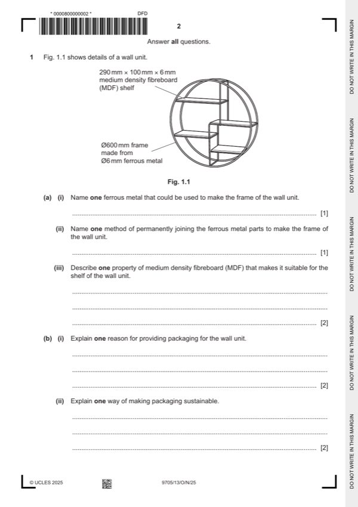

Question 1

Original paper page 2
Part 1(a)(i) — solution
Exemplar answers: 1 AOVR
Mild steel [1], steel [1], stainless steel [1], cast iron [1], iron [1]
Accept other ferrous metals.
Mark points
- Include the ideas shown in the solution above.
Part 1(a)(ii) — solution
Exemplar answers: 1 AOVR
Brazing [1], welding [1], soldering [1], epoxy resin [1]
Accept other permanent methods of joining a ferrous metal.
Mark points
- Include the ideas shown in the solution above.
Part 1(a)(iii) — solution
Exemplar answers: 2 AOVR
MDF: Available in sheets with a smooth surface finish [1] that will
accept paint to match with the customers room decoration. [1]
Strong / rigid / durable / stable enough [1] to support the weight of
objects placed on the shelf. [1]
Cheaper [1] than using hardwood. [1]
Smooth surface [1] means it does not need an applied finish / can
be wiped clean easily. [1]
Mark points
- Include the ideas shown in the solution above.
Part 1(b)(i) — solution
Exemplar answers: 2 AOVR
Keeps all the parts together [1] so they are not lost. [1]
Can be used to promote the product [1] by having images of the
product. [1]
Prevents the product being damaged [1] during transportation. [1]
Mark points
- Include the ideas shown in the solution above.
Part 1(b)(ii) — solution
Exemplar answers: 2 AOVR
Label the materials so that they can easily be separated for
recycling [1] to reduce the amount of raw materials used. [1]
Use recycled materials for the packaging [1] to reduce the amount
of materials going into landfill. [1]
Use natural materials [1] that require a minimal amount of
processing. [1]
Use recyclable materials [1] so the packaging can be recycled. [1]
University Press & Assessment 2025 Page 5 of 19
9705/13 Cambridge International AS & A Level – Mark Scheme October/November 2025
Guidance
Mark points
- Include the ideas shown in the solution above.